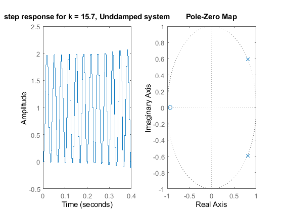

Contents
clear; close all; clc
num = [1 2];
den = [4 -3 -1];
Hp = tf(num,den)
T = 0.2/10;
Hdes = c2d(Hp,T,'zoh')
figure;
subplot(121);
rlocus(Hp);
title("Continuous-time approach");
text(-8,2,'$H_{des}(s)=\frac{s+2}{(4s+1)(s-1)}$','Interpreter','Latex','FontSize',12);
subplot(122);rlocus(Hdes);title('Discrete-time approach')
text(-0.5,0.6,'$H_{des}(z)=\frac{0.064563 (z-0.6655)}{(z-1.221) (z-0.9512)}$','Interpreter','Latex','FontSize',12)
Hp =
s + 2
---------------
4 s^2 - 3 s - 1
Continuous-time transfer function.
Hdes =
0.005138 z - 0.004937
---------------------
z^2 - 2.015 z + 1.015
Sample time: 0.02 seconds
Discrete-time transfer function.
S2 - Simulating for diferent values of k the step response of the system
k = 16;
Ho = feedback(k*Hp,1);
figure;
subplot(121)
step(feedback(k*Hdes,1),4);
hold on
step(Ho);
hold off
subplot(122);
pzmap(feedback(k*Hdes,1));
S3
Hp = zpk([],[-20 -40],2400);
Ts = 1/300;
Tmax = 1/20;
Ct = Tmax/10;
Tt = 4*Tmax;
Hdes =c2d(Hp,Ts);
figure;
rlocus(Hdes)
figure;
k = 0.03;
subplot(121)
step(feedback(k*Hdes,1),1)
title("step response for k = 0.03, Overdamped system");
subplot(122)
pzmap(feedback(k*Hdes,1))


figure;
k = 0.0396;
subplot(121)
step(feedback(k*Hdes,1),1)
title("step response for k = 0.0396, Crtitically damped system");
subplot(122)
pzmap(feedback(k*Hdes,1))
figure;
k = 5;
subplot(121)
step(feedback(k*Hdes,1),1)
title("step response for k from (0.396 , 15.7), Underdamped system");
subplot(122)
pzmap(feedback(k*Hdes,1))
figure;
k = 15.7;
subplot(121)
step(feedback(k*Hdes,1),0.4)
title("step response for k = 15.7, Unddamped system");
subplot(122)
pzmap(feedback(k*Hdes,1))
